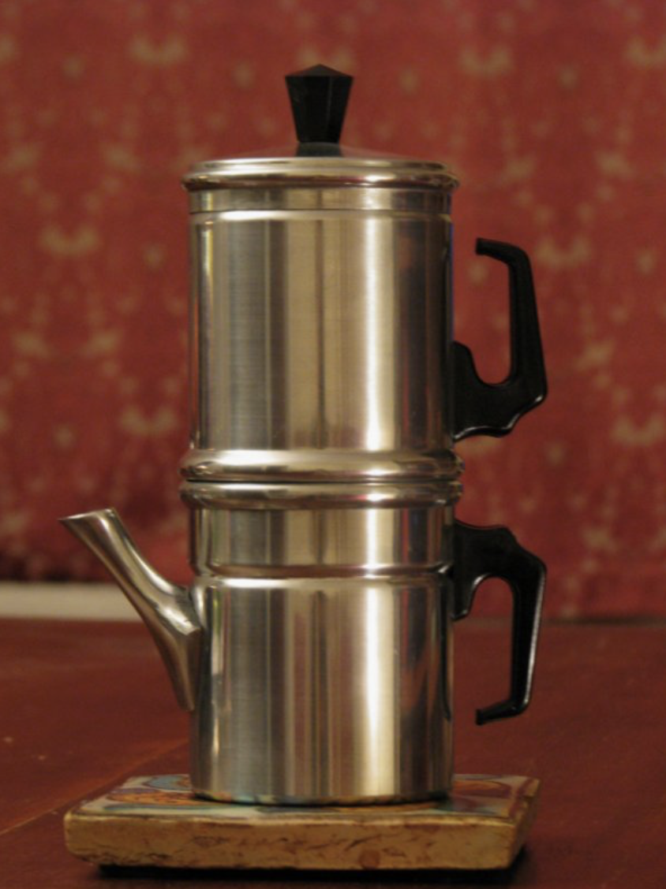
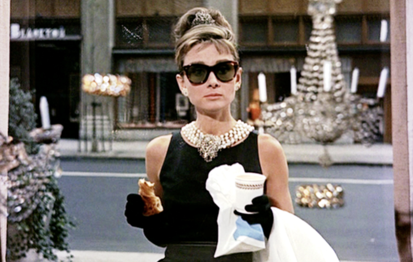

Lo si sorseggia per piacere, lo si beve per necessità, ci si annegano i savoiardi per fare il tiramisù: sì, stiamo parlando del caffè. È una delle bevande più diffuse al mondo, seconda solo al tè, dalla storia millenaria, presente in tantissime culture diverse.
Nella nostra penisola, il caffè per eccellenza è l’espresso, il cosiddetto “oro nero” di Napoli. La capitale partenopea fu la prima città italiana ad accogliere ed apprezzare la nuova bevanda proveniente dall’Etiopia, tanto da esserne ancora oggi legata.
Il successo non fu immediato: fino al 1768 il caffè era malvisto a causa della sua colorazione scura, per cui si pensava portasse il malocchio.La Chiesa la definì “bevanda del diavolo”, ma quando papa Clemente VII la assaggiò non potè che dare la sua benedizione e ritirare le accuse demoniache, dicendo: «È così squisita che sarebbe un peccato lasciarla bere esclusivamente agli infedeli». Dopo essere stata consacrata nei raffinati caffè viennesi, si diffuse tra la borghesia della città campana grazie a Maria Carolina d’Asburgo, sposa di Ferdinando IV di Borbone re di Napoli. Ma fu l’invenzione della moka, nel 1819, a portare il caffè nelle case della gente comune. Di fatto una moka che funziona per gravità e non attraverso la pressione generata dal vapore, la cuccumella venne presto soppiantata dal più moderno strumento brevettato da Bialetti. La città portuale di Mokha, nello Yemen, da cui partivano per l’Occidente le navi cariche di caffè di qualità arabica, presta il nome alla tipica caffettiera italiana.
Fu l’ultima arrivata, tuttavia, a portare alla coniazione della locuzione “espresso napoletano”: la macchina per espresso, di più difficile utilizzo e presente esclusivamente nei bar.
Insomma da centinaia di anni, il caffè fa parte della quotidianità di molti:In tutto il mondo si definisce “pausa caffè” quel momento in un orario compreso tra le 10 e le 10:30 in cui si sente la necessità impellente, irresistibile di staccare un attimo, ma in alcuni Paesi è la “pausa caffè”. Dopo due chiacchiere e un espresso, tutto va meglio e la giornata può continuare. “Caffè?” è la domanda più semplice del mondo, a cui, anche venisse dal collega più antipatico o da una mamma petulante, non si può dire di no. Una singola parola dalle mille declinazioni: un invito, un appuntamento di routine, una richiesta disperata, un modo per spezzare il silenzio magari teso o imbarazzante creatosi attorno al tavolo, una proposta di procrastinazione, un modo per ammazzare il tempo, come canta Fiorella Mannoia.
Se la cantante romana ammazza il tempo bevendo caffè nero bollente, è tradizione nella penisola italiana “ammazzare il caffè” con un cicchetto di liquore, soprattutto alla fine di un pasto abbondante. L'obiettivo è quello di ammazzare il sapore forte del caffè in bocca. La stessa caratteristica del caffè a cui in fondo fa riferimento Mannoia nella sua canzone: quel caffè non è scuro e caldo, ma nero e bollente, entrambi aggettivi superlativi, e diventa quindi metafora di un amore intenso e travolgente, come l’aroma della bevanda.
Il caffè nasce, cresce, evolve e muore, come dotato di vita propria.Nasce in Brasile, Vietnam, Indonesia e Colombia, tra i principali produttori di caffè al mondo, dalla lavorazione dei chicchi. Si trasforma in prodotto finito con la tostatura, un tempo artigianale, fatta in casa, per la quale addirittura Pellegrino Artusi dispensava consigli nel suo celebre libro di ricette La scienza in cucina e l'arte di mangiar bene. Oggi è invece quasi sempre industriale. La fase di evoluzione dipende dal destino dei chicchi di caffè tostati: sono molteplici le bevande che si possono preparare a partire dall’espresso. Se è corto, diventa ristretto, se ha meno caffeina del normale è decaffeinato, se è allungato con acqua si trasforma in americano; se si aggiunge latte è macchiato, ma se il latte è caldo e spumoso, ecco allora che diventa schiumato. Qualche goccia di superalcolico e diventa corretto e ci sono diversi modi di fare tale correzione. Tipica di Fano è la moretta fanese, in cui il superalcolico non è uno, bensì tre (brandy, rum e liquore all’anice), nata probabilmente tra i pescatori marchigiani, che mischiavano i rimasugli delle bottiglie avanzate al caffè per scaldarsi prima di uscire in mare. A Livorno c’è il ponce, bevanda dai numerosi ingredienti derivata dal punch inglese, a sua volta versione meno rozza del grog. In Veneto non ci si accontenta del caffè corretto e a tazzina vuota si procede con il “resentin”, il risciacuo, che consiste nell’aggiungere liquore alle gocce rimaste sul fondo della tazzina. Altra declinazione locale è il torinese “bicerin”, in cui il caffè incontra la cioccolata in un caldo abbraccio tra cui si infiltra la crema di latte. Amato da grandi personalità della storia e dell’arte, tra cui Camillo Benso e Umberto Eco, la sua ricetta è ancora gelosamente custodita dal caffè storico di Piazza della Consolata
La fase di evoluzione dipende dal destino dei chicchi di caffè tostati: sono molteplici le bevande che si possono preparare a partire dall’espresso. Se è corto, diventa ristretto, se ha meno caffeina del normale è decaffeinato, se è allungato con acqua si trasforma in americano; se si aggiunge latte è macchiato, ma se il latte è caldo e spumoso, ecco allora che diventa schiumato.
Qualche goccia di superalcolico e diventa corretto e ci sono diversi modi di fare tale correzione.Tipica di Fano è la moretta fanese, in cui il superalcolico non è uno, bensì tre (brandy, rum e liquore all’anice), nata probabilmente tra i pescatori marchigiani, che mischiavano i rimasugli delle bottiglie avanzate al caffè per scaldarsi prima di uscire in mare. A Livorno c’è il ponce, bevanda dai numerosi ingredienti derivata dal punch inglese, a sua volta versione meno rozza del grog. In Veneto non ci si accontenta del caffè corretto e a tazzina vuota si procede con il “resentin”, il risciacuo, che consiste nell’aggiungere liquore alle gocce rimaste sul fondo della tazzina.
Altra declinazione locale è il torinese bicerin, in cui il caffè incontra la cioccolata in un caldo abbraccio tra cui si infiltra la crema di latte. Amato da grandi personalità della storia e dell’arte, tra cui Camillo Benso e Umberto Eco, la sua ricetta è ancora gelosamente custodita dal caffè storico di Piazza della Consolata a Torino.
Come si dice, paese che vai, caffè che trovi.In Turchia e in molti paesi arabi e balcani, il caffè si prepara utilizzando il cezve, uno speciale bricco fatto solitamente in rame o in ottone, e macinando i chicchi molto finemente.
Nei Paesi hispano-hablantes, il caffè corretto è il “carajillo”, probabilmente nato durante l’occupazione spagnola di Cuba in cui i conquistadores avrebbero mischiato caffè e alcol per darsi coraggio, “coraje”. In Messico c’è il cafè de olla, aromatizzato alla cannella, nella versione analcolica e non, per preparare il quale serve la tradizionale pentola di coccio da cui prende il nome.
In India è molto popolare il kaapi, il caffè filtrato del sud del Paese; in Irlanda l’irish coffee, in cui però l’aroma del caffè è una goccia nel mare di panna e rum; in Svezia, il fika, caffè filtrato, non importa tanto preparato come, quanto che sia accompagnato da un dolce. Infine a Hong Kong, tè e caffè, le due bevande più popolari al mondo si mescolano nel Yuanyang, a cui si aggiunge latte condensato.
Fior di scienziati ancora non hanno scoperto quale reazione chimica fa sì che l’espresso all’estero subisca una transizione di fase tale da diventare una brodaglia annacquata che riempie mezza tazza e lascia un sentimento di tristezza addosso. C’è la possibilità che gli americani abbiano copiato la ricetta della Peppina: la Peppina fa il caffè con la cioccolata, poi ci mette la marmellata, mezzo chilo di cipolle, quattro o cinque caramelle e sette ali di farfalle. Forse questo spiegherebbe l’intruglio ottenuto.
Il caffè non è solo bevanda, ma parte integrante della cultura e della società in cui si diffonde: ecco allora che entra tra le pagine dei libri, tra le note delle canzoni, nelle scene di grandi film. Iconico è il frame con Audrey Hepburn, di tutto punto vestita, davanti alla vetrina di Tiffany, intenta a consumare la sua colazione con caffè e brioche. In molti ricorderanno la sigla della serie televisiva americana Fury, in cui Furia, cavallo del West, beve solo caffè, per mantenere il suo pelo il più nero che c’è.
Juan Gris trasforma la caffettiera in un quadro cubista nel 1916, racchiudendo nella sua tela gli ingredienti fondamentali per iniziare la giornata: moka, tazzina e giornale.
L’accoppiata caffè-quotidiano funziona sempre: il caffè è amaro come le cattive notizie, ma piacevole come le buone. Non solo soggetto, ma anche oggetto d’arte: Karen Land, artista statunitense, riscrive la storia dell’arte usando il caffè, dando vita a opere straordinarie.
Al caffè alcuni affidano le speranze riguardo al futuro: la caffeomanzia è una pratica diffusa nel mondo delle arti divinatorie. Il caffè turco e quello greco si prestano meglio a questo tipo di pratica, in quanto la tostatura fine fa sì che sul fondo della tazzina si depositi uno strato di polvere, da leggere e interpretare. C’è chi legge i fondi e chi nel dubbio li risciacqua con il liquore, citando nuovamente il rasentin veneto.
Il caffè è davvero una bevanda dai mille volti, capace di infiltrarsi nei modi più variegati in diverse culture del mondo. Per dirla con De Andrè: «Ah che bell’o caffè, pure in carcere ‘o sanno fa..».